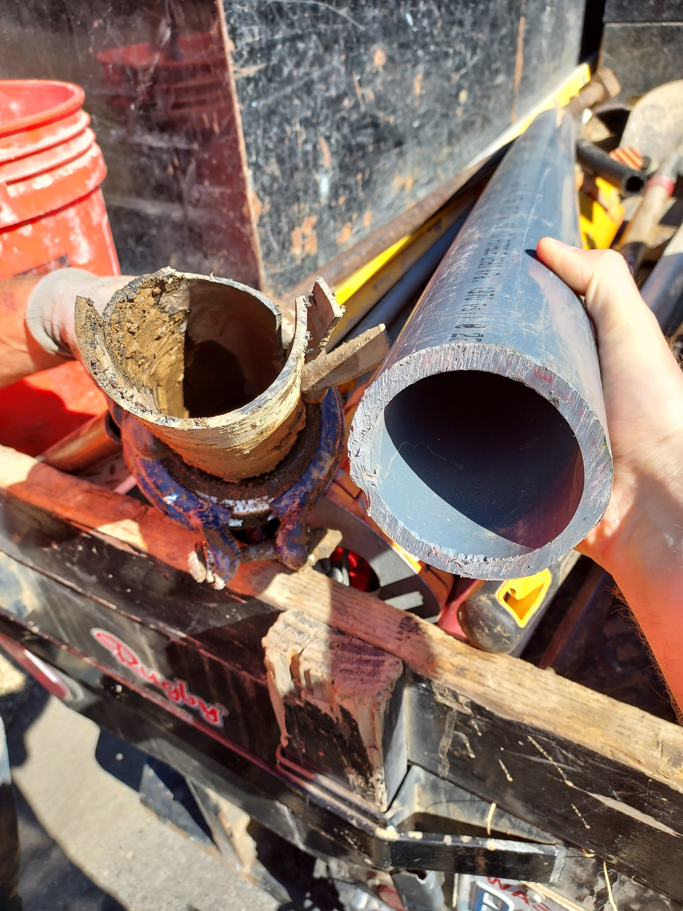

Main Replacement Project
Status 7/11/2025
All government grants were put on hold at the beginning of 2025, so we were not able to secure a grant. Our loan was not approved by the State of Washington. The board is looking at alternative plans to do the project incrementally.
Project Summary
The Board approved three motions in 2024. The first was to request a loan from the State of Washington through the Perpetual Water Fund to fund Northwest Water Services to create a plan to replace our aging water system. The reasons are two fold:
Breaks are more frequent and more expensive
First, we have many more breaks in the system than we previously did, and the materials that were used in the 1950s to build the system are not up to the standards of today.

Water Loss
The second reason is that we lose about 30% of the water that we pump from the ground through leaks in the system, which is wasteful, costs us extra electricity to pump, and is not in compliance with state standards.
The project plan has been completed, and we are in the process of getting bids from companies at this time.
Project Plan Funding
The second motion that was passed was to pursue a State of Washington Perpetual Water Fund low interest loan. We received a loan last year to fund the project plan, and the loan would allow us to fund the replacement system. The loan application should be submitted in October 2024.
Federal Grant Identification and Application
The third motion was to fund the pursuit of federal grants to cover some of the cost of the replacement. We have been working with a grant writing company who specializes in identifying and preparing the grant submission paperwork. We are in the process of applying for a grant that would cover up to 50% of the cost. Current costs are estimated to be over $1,000,000, so we are hopeful that a grant is approved. The grant application will be submitted prior to Oct 7, 2024.